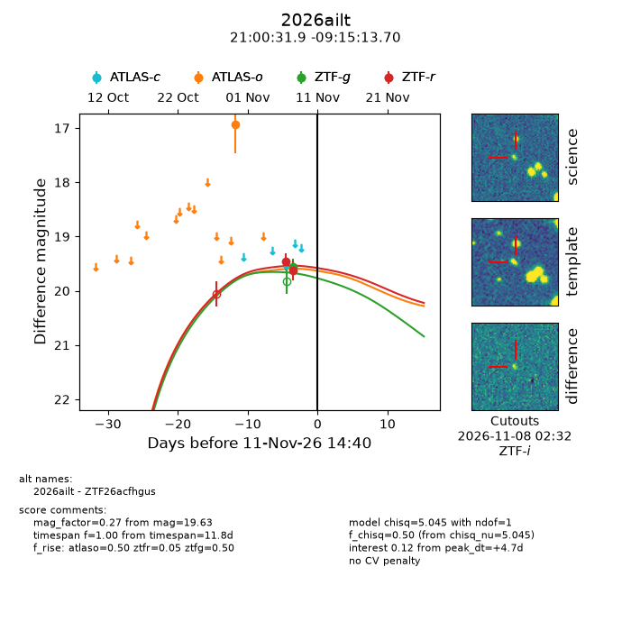
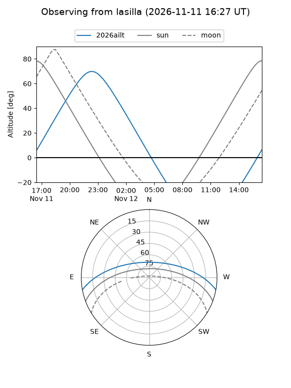
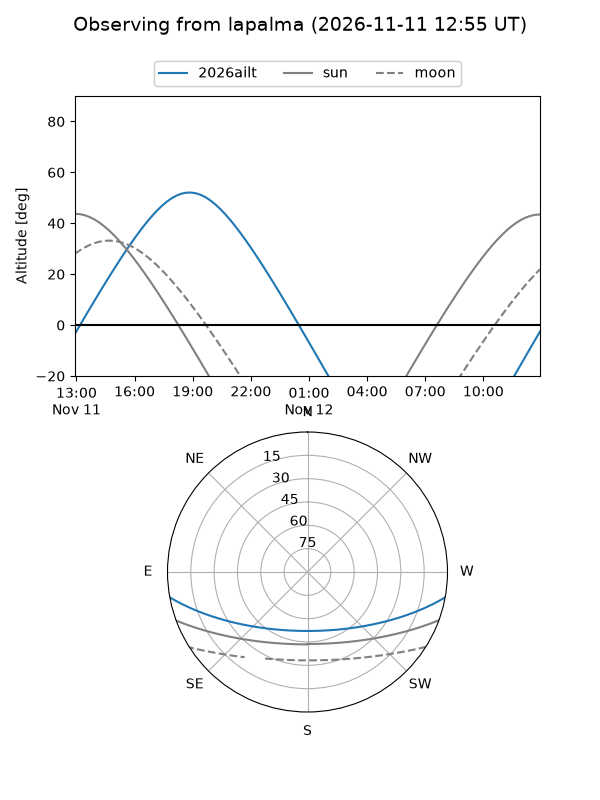
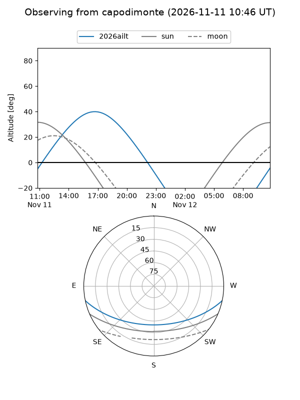
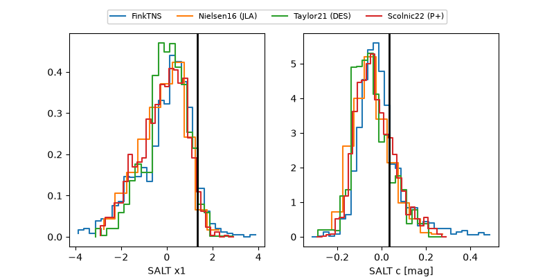

2026ailt
Target 2026ailt at 2026-11-12 02:32
Aliases and brokers:
FINK-ZTF: ztf.fink-portal.org/ZTF26acfhgus
Lasair-ZTF: lasair-ztf.lsst.ac.uk/objects/ZTF26acfhgus
ALeRCE-ZTF: alerce.online/object/ZTF26acfhgus
YSE-PZ: ziggy.ucolick.org/yse/transient_detail/2026ailt
TNS name: wis-tns.org/object/2026ailt
Direct TNS query: direct search
alt names
ZTF26acfhgus (ztf,fink_ztf)
2026ailt (tns,yse)
Coordinates:
equatorial (ra, dec) = 315.1330,-9.25381
equatorial (HMS+DMS) = 21:00:31.93,-09:15:13.70
galactic (l, b) = (39.5750,-32.84452)
Flags:
peak dt: +5.2
Photometry:
last atlaso=16.93, ztfg=19.56, ztfr=19.63
1 atlaso, 1 ztfg, 2 ztfr detections
Lightcurve

Visibility



Additional plots
